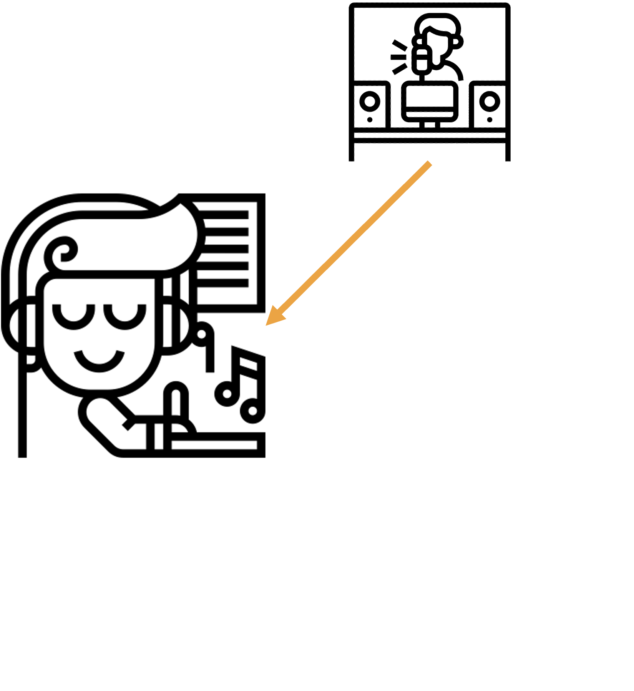
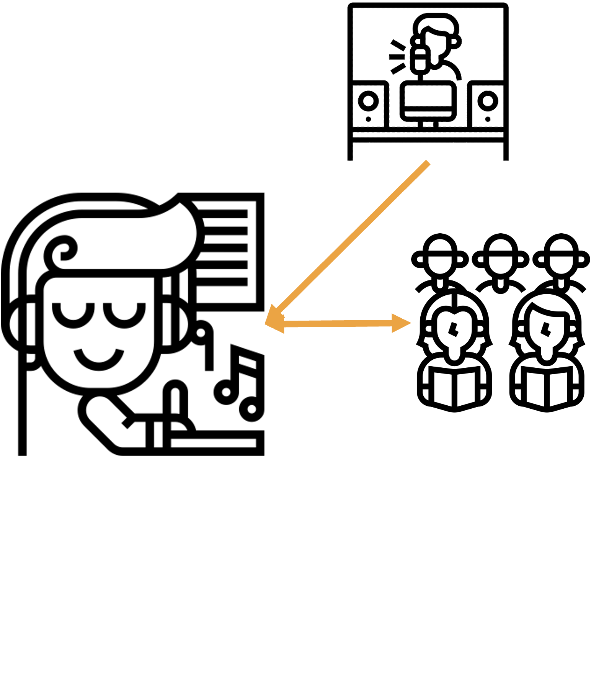
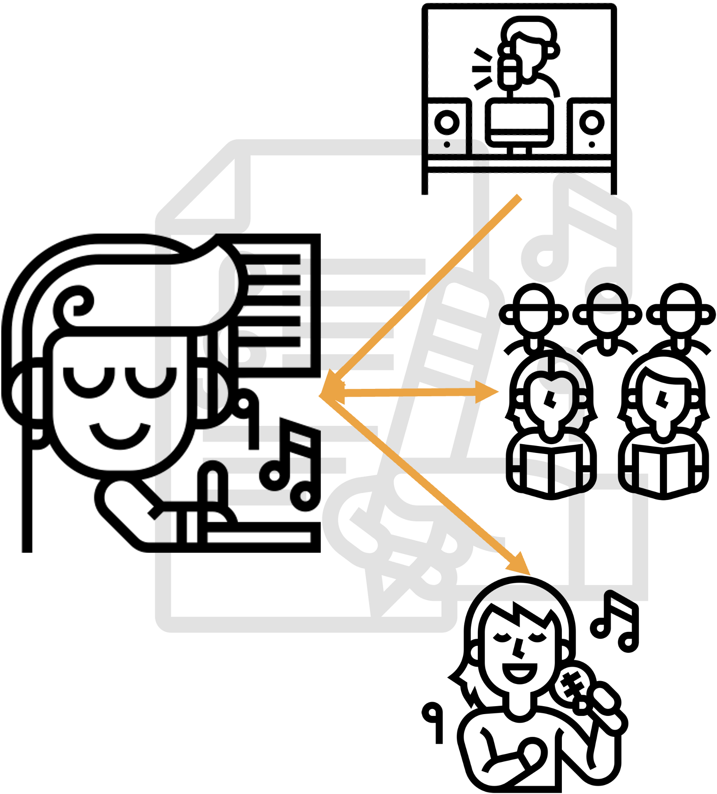

UI5 masterclass
#MasteringSAP 2023 - Volker Buzek
/me
Development Architect @ j&s-soft
SAP Mentor
- @vobu
- mastodon
- @vobu@saptodon.org
- slack
- vobu
- volker.buzek@js-soft.com
- book! 📘 (July 23)
- SAP UI Frameworks for Enterprise Developers -
a Practical Guide
you
you + SAP
you + SAP + community
you + SAP + community + yourself

arranger
full stack product developer
scaffolding
"roll your own"
easy-ui5 ⧪
ts-app
generator-$name
→ YOURS
@sap/fiori ↗
ui5 serve \
—accept-remote-connections
harmonize dev env
nvm → BTP node version
eslint → prevent coding mistakes
prettier → formatting (+ ;)
OData v4 model
...auto-expands
yo easy-ui5 --addGhOrg $org
OData v4 macros
aka smart controls for v4
aka FE macros
aka FPM building blocks
⚡️ perf
⚡️ sap-ui-xx-cache-use=false
uni-directional binding
"reactivity"
wdi5
😁 happy path 🛣️
"grow as you go"
advanced usage
scale out and up
CI/CD
prep
the one and only KPI
cut local first
automate everything!
CI/CD
pipeline
branch name pattern
use cache
vendor build dep node_modules
🟦 🟩
⚡️ cf deploy -f
⚡️ --delete-services
summary
you → arranger
scaffolding &&
ui5 tooling + extensions
use TS && wdi5
optimize the one and only KPI
/me
Development Architect @ j&s-soft
SAP Mentor
- @vobu
- mastodon
- @vobu@saptodon.org
- slack
- vobu
- volker.buzek@js-soft.com
- book! 📘 (July 23)
- SAP UI Frameworks for Enterprise Developers -
a Practical Guide